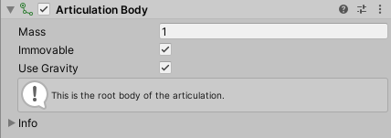
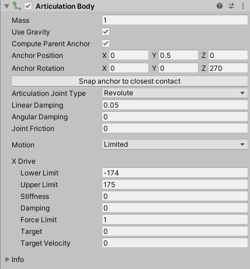
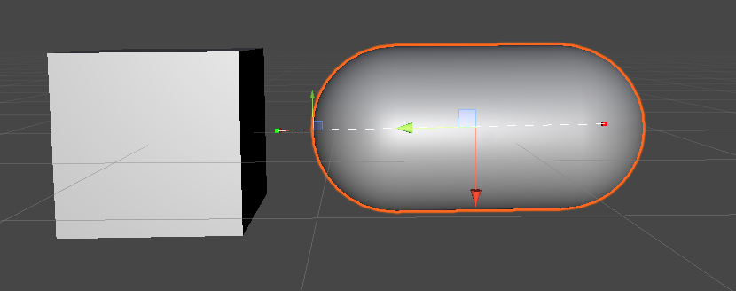
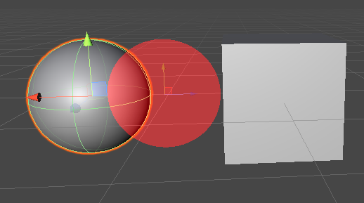
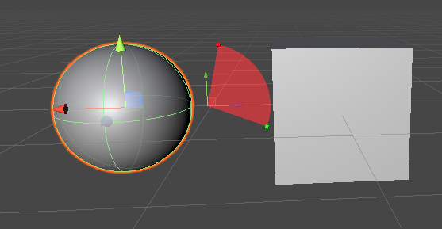
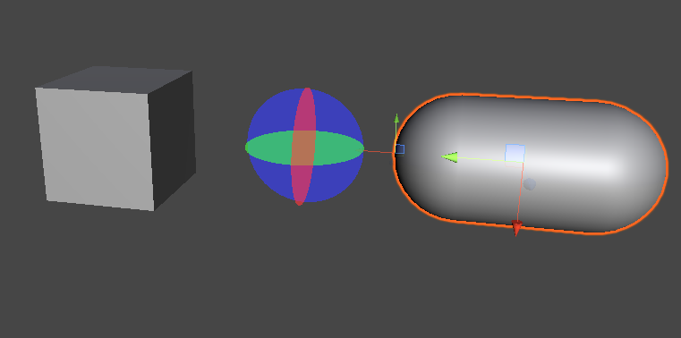
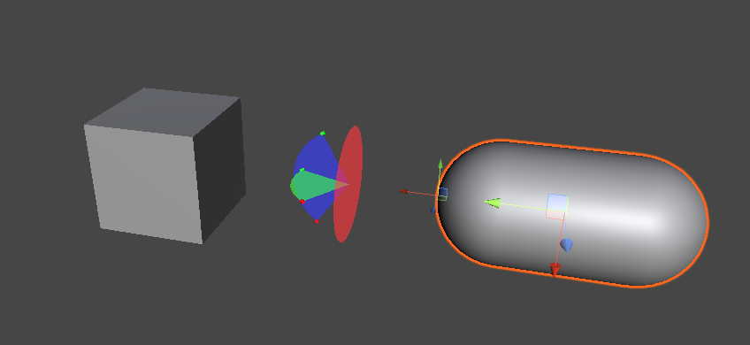

Articulation Body
Articulation Bodies enable you to build physics articulations such as robotic arms or kinematic chains with GameObjects that are hierarchically organized. They help you get realistic physics behaviors in the context of simulation for industrial applications.
属性
An Articulation Body allows you to define in one single component the properties that you would similarly define through a RigidBody and a regular Joint in a classic configuration. That said, these properties depend on the GameObject position in the hierarchy:
- For the root GameObject of the articulation, you can only set up physical body properties:

- For any child GameObject within the articulation, you can set up physical body properties as well as the type and properties of the joint that links this GameObject to its parent GameObject:

The Articulation Body properties fall into the following main categories:
Physical body properties
Define the way the Articulation Body responds to the physics environment.
| 属性 | 功能 |
|---|---|
| Mass | The mass of the Articulation Body (in kilograms by default). |
| Immovable | Use this property to define whether this articulation body is movable or not. You can set this property only for the root Articulation Body. This property is useful to make the base body of robotic hands immovable, for example. The physics engine solves it separately from all the other constraints and guarantees that it is not violated. |
| Use Gravity | Use this property to make the gravity affect this Articulation Body or not. |
Joint anchor properties
Define the coordinates of the joint anchors for the Articulation Body and its parent Articulation Body.
| 属性 | 功能 |
|---|---|
| Compute Parent Anchor | Enable this property to make the parent-relative anchor match the anchor of the current Articulation Body. If you disable this property, you can separately set values for Parent Anchor Position and Parent Anchor Rotation. |
| Anchor Position | The position coordinates of the Anchor, relative to the current Articulation Body. |
| Anchor Rotation | The rotation coordinates of the Anchor, relative to the current Articulation Body. |
| Parent Anchor Position | The position coordinates of the Parent Anchor, relative to the parent Articulation Body. This property only appears if you disable Compute Parent Anchor. |
| Parent Anchor Rotation | The rotation coordinates of the Parent Anchor, relative to the parent Articulation Body. This property only appears if you disable Compute Parent Anchor. |
| Snap Anchor to closest contact | Computes the point on the surface of this Articulation Body that is closest to the center of mass of the parent Articulation Body, and sets the anchor to it. If Compute Parent Anchor is enabled, Unity also updates the parent anchor accordingly. |
Joint type selection and joint properties
Select the type of joint that links the current Articulation Body to its parent Articulation Body, and define its common and specific properties.
| 属性 | 功能 | |
|---|---|---|
| Articulation Joint Type | The type of joint that connects this Articulation Body to its parent Articulation Body. Note: All types of joints have in common the properties that this table describes, and some of them have specific additional properties. | |
| Fixed | Sets a rigid, unbreakable and unstretchable link between bodies. A Fixed articulation joint has no additional properties than the ones that this table describes. | |
| Prismatic | Prevents all motion except sliding along a particular axis. See also the Prismatic joint additional properties. | |
| Revolute | Allows rotation around a particular axis (like a hinge). See also the Revolute joint additional properties. | |
| Spherical | Anatomical joint, which allows two swings and one twist. See also the Spherical joint additional properties. | |
| Linear Damping | Coefficient that controls the linear slow down. | |
| Angular Damping | Coefficient that controls the rotational slow down. | |
| Joint Friction | Coefficient that controls the energy loss caused by friction in the joint. |
Prismatic joint additional properties
| 属性 | 功能 | |
|---|---|---|
| Axis | Specifies the axis that the prismatic joint allows motion along, relative to the parent anchor. | |
| Motion | Specifies the motion restriction type along that axis. | |
| Free | Allows the Articulation Body to freely move along the selected Axis of the parent anchor. | |
| 受限 | Restricts the movement of the Articulation Body along the selected Axis of the parent anchor, according to the Lower Limit and Upper Limit you specify in the Drive properties. | |
| X Drive, Y Drive, or Z Drive | The properties of the linear drive that is attached to the joint, according to the selected Axis of the parent anchor. Note: There is only one Drive section here. Its title automatically adjusts according to the axis selection. |
Revolute joint additional properties
| 属性 | 功能 | |
|---|---|---|
| Motion | Specifies the rotation restriction type around the X axis of the parent anchor. | |
| Free | Allows the Articulation Body to freely rotate around the X axis of the parent anchor. | |
| 受限 | Restricts the rotation of the Articulation Body around the X axis of the parent anchor, according to the Lower Limit and Upper Limit you specify in the X Drive properties. | |
| X Drive | The properties of the rotational drive that is attached to the joint, around the X axis of the parent anchor. |
Spherical joint additional properties
| 属性 | 功能 | |
|---|---|---|
| Swing Y | Specifies the rotation restriction type around the Y axis. | |
| Free | Allows the Articulation Body to freely rotate around the Y axis of the parent anchor. | |
| 受限 | Restricts the rotation of the Articulation Body around the Y axis of the parent anchor, according to the Lower Limit and Upper Limit you specify in the Y Drive properties. | |
| Locked | Totally locks the rotation of the Articulation Body around the Y axis of the parent anchor. Note: You cannot lock more than two degrees of freedom at the same time. | |
| Swing Z | Specifies the rotation restriction type around the Z axis. The options are the same for all 3 axes. | |
| Twist | Specifies the rotation restriction type around the X axis. The options are the same for all 3 axes. | |
| Y Drive, Z Drive, and X Drive | The properties of the rotational drive that is attached to the joint, respectively around the Y, Z and X axes of the parent anchor. Note: There is a separate subsection for each drive. If you lock an axe, the Inspector does not display its Drive properties. |
Joint drive properties
Set up joint limits about a specific axis, as well as the joint drive effect parameters for this axis.
| 属性 | 功能 |
|---|---|
| Lower Limit | The limit below which the joint prevents the body from moving or rotating, depending on the joint type. You can define this property only if you set the related Motion, Swing or Twist property to Limited. |
| Upper Limit | The limit above which the joint prevents the body from moving or rotating, depending on the joint type. You can define this property only if you set the related Motion, Swing or Twist property to Limited. |
| Stiffness | The stiffness of the spring that attracts the joint to the target. |
| Damping | The damping of the spring that attracts the joint to the target. |
| Force limit | The maximum amount of force or torque this drive can produce. |
| Target | The target value this drive aims to reach. |
| Target velocity | The target velocity this drive aims to reach. |
Configuring articulation joints
Joint drive effect
Any drive is an implicit 1D spring that aims to bring the current drive parameters to the target by the application of an effect (forces or torques) computed by this formula:
Effect = stiffness * (drivePosition - targetPosition) - damping * (driveVelocity - targetVelocity)
A drive attached to a linear degree of freedom produces forces. A drive attached to a rotational degree of freedom produces torques. You can set each parameter of this formula through the Joint drive properties to fine-tune the desired effect for any axis involved in a joint.
Notice that the effect formula consists of two independent terms that you can balance, and even cancel out. For example:
If you set the stiffness to zero, you get a drive that only aims at reaching a specific velocity.
If you set the damping to zero, you get a drive that aims at reaching a certain position without trying to reach any particular velocity. In that case, the drive does not try to eventually stop once the target is reached.
Joint anchors
There are two anchors per each joint:
The Anchor, relative to the current Articulation Body
The Parent Anchor, relative to the parent Articulation Body
By default, Unity automatically computes the Parent Anchor to match the pose of the Anchor. However, you can disable the Compute Parent Anchor property to manually set the Parent Anchor:
Currently, the Unity Editor displays the anchors with a scaled transform tool to differentiate them from the GameObject transform tool:

To change the position of the anchors, you can either use the Inspector and edit the Joint anchor properties or directly move and rotate their transform tools in the Scene View.
Note: When you create a new Articulation Body, Unity positions the anchors at the local zero of their respective bodies. However, the local zero is not an ideal default position for the anchor if the connected bodies have colliders attached, because the joint might then try to push the bodies into each other. The Snap Anchor to closest contact button helps you set a more reasonable default location of the anchors, which works with many articulations.
Joint degrees of freedom and limits
Note: Currently, the Scene View allows you to visualize the joint limits but not to manipulate them graphically.
Fixed joint
A fixed joint has no degrees of freedom, so the Scene View displays no specific markers.
Prismatic joint
A prismatic joint is practically a slider along a specified axis relative to the parent anchor. This axis can only be a basis axis (X, Y, or Z) but you can still rotate the parent anchor to get a different axis orientation in world space.
You can set up a prismatic joint to have a free or limited translation. To do this, use the Inspector and edit the prismatic joint specific properties.
Note: You cannot lock a prismatic joint, otherwise this would remove its only degree of freedom and would make it a degenerate joint.
When you set the prismatic joint Motion to Limited, the Scene View displays markers to represent the translation limits:
The small red marker represents the lower limit.
The small green marker represents the upper limit.
The dotted white line materializes allowed translation between the limits.
To manipulate the joint limits, you must use the Inspector and edit their values in the Joint drive properties.

Example of a limited prismatic joint.
Note: The Scene View displays no specific markers when you set the prismatic joint Motion to Free.
Revolute joint
A revolute joint is essentially a hinge with a single rotational degree of freedom around the parent anchor’s X axis. You can still rotate the parent anchor to get a different axis orientation in world space.
You can set up a revolute joint to have a free or limited rotation. To do this, use the Inspector and edit the revolute joint specific properties.
Note: You cannot lock a revolute joint, otherwise this would remove its only degree of freedom and would make it a degenerate joint.
When you set the revolute joint Motion to Free, the Scene View displays a red disk to represent the free rotation allowed around the X axis.

Example of a free revolute joint.
When you set the revolute joint Motion to Limited, the Scene View displays markers to represent the rotation limits:
The small red marker represents the lower limit.
The small green marker represents the upper limit.
The red circle sector materializes the allowed rotation angle between the limits.
The Z axis of the parent anchor serves as the reference (zero) for both limit angles.
To manipulate the joint limits, you must use the Inspector and edit their values in the Joint drive properties.

Example of a limited revolute joint.
Spherical joint
A spherical joint is an anatomical joint that is best suited for simulating humanoid limbs.
This joint type can have up to three rotational degrees of freedom. You can set up each of these rotations to be free, limited, or locked. To do this, use the Inspector and edit the revolute joint specific properties.
Note: You cannot lock all rotations at the same time for a spherical joint, otherwise this would remove all its degrees of freedom and would make it a degenerate joint. Also, you should not lock both swing axes to mimic a revolute joint, because the simulation would happen differently than with the revolute joint and would be more expensive.
Like with the revolute joint:
The Scene View displays free rotations with colored disks and limited rotations with colored circle sectors. Each color (red, green, blue) represents the rotation around the axis of this color (respectively: X, Y, Z).
The small red and green markers respectively represent the lower and upper limits.

Example of a free spherical joint.

Example of a spherical joint with limited swings.